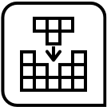
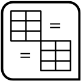
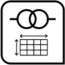
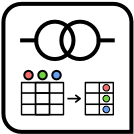
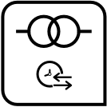

Function reference
Planning and Prep
Should you need to understand your data a bit more, use the scan_data() function. It provides a comprehensive report on the data you might be planning on validating. If going down the road of preparing a data quality analysis, call on an agent to carry out that eventual plan with create_agent(). The agent here is to be told which table is the target, and, we devise a stepwise validation plan with validation functions. If collecting and publishing table information is your goal, then begin with the create_informant() function.
-

scan_data() - Thoroughly scan a table to better understand it
-
create_agent() - Create a pointblank agent object
-

create_informant() - Create a pointblank informant object
-
validate_rmd() - Perform pointblank validation testing within R Markdown documents
-

action_levels()warn_on_fail()stop_on_fail() - Set action levels: failure thresholds and functions to invoke
-
db_tbl() - Get a table from a database
-
file_tbl() - Get a table from a local or remote file
-
tbl_store() - Define a store of tables with table-prep formulas: a table store
-

tbl_source() - Obtain a table-prep formula from a table store
-
tbl_get() - Obtain a materialized table via a table store
-

draft_validation() - Draft a starter pointblank validation .R/.Rmd file with a data table
Validation, Expectation, and Test Functions
Validation functions are either used with an agent object or, more simply, just with the table of interest. When used with an agent, each validation works to build up a validation plan (which is executed with the interrogate() function). If one or more validation functions are used directly on data (that is, no agent is involved whatsoever), then the data is checked and passed through if there are no problems. We can fine tune the warn_* and/or stop_* thresholds and so that if the level of failed validation units exceeds those set levels, then we’ll get either a warning or an error. Each validation function is associated with an expectation function (of the form expect_*()). These expectation functions are equivalent in usage and behavior to those in the testthat package. Finally, each validation function has an associated test function (of the form test_*()) that always returns a logical value.
-
col_vals_lt()expect_col_vals_lt()test_col_vals_lt() - Are column data less than a fixed value or data in another column?
-

col_vals_lte()expect_col_vals_lte()test_col_vals_lte() - Are column data less than or equal to a fixed value or data in another column?
-

col_vals_equal()expect_col_vals_equal()test_col_vals_equal() - Are column data equal to a fixed value or data in another column?
-

col_vals_not_equal()expect_col_vals_not_equal()test_col_vals_not_equal() - Are column data not equal to a fixed value or data in another column?
-
col_vals_gte()expect_col_vals_gte()test_col_vals_gte() - Are column data greater than or equal to a fixed value or data in another column?
-

col_vals_gt()expect_col_vals_gt()test_col_vals_gt() - Are column data greater than a fixed value or data in another column?
-

col_vals_between()expect_col_vals_between()test_col_vals_between() - Do column data lie between two specified values or data in other columns?
-

col_vals_not_between()expect_col_vals_not_between()test_col_vals_not_between() - Do column data lie outside of two specified values or data in other columns?
-
col_vals_in_set()expect_col_vals_in_set()test_col_vals_in_set() - Are column data part of a specified set of values?
-

col_vals_not_in_set()expect_col_vals_not_in_set()test_col_vals_not_in_set() - Are data not part of a specified set of values?
-
col_vals_make_set()expect_col_vals_make_set()test_col_vals_make_set() - Is a set of values entirely accounted for in a column of values?
-

col_vals_make_subset()expect_col_vals_make_subset()test_col_vals_make_subset() - Is a set of values a subset of a column of values?
-
col_vals_increasing()expect_col_vals_increasing()test_col_vals_increasing() - Are column data increasing by row?
-
col_vals_decreasing()expect_col_vals_decreasing()test_col_vals_decreasing() - Are column data decreasing by row?
-

col_vals_null()expect_col_vals_null()test_col_vals_null() - Are column data
NULL/NA?
-

col_vals_not_null()expect_col_vals_not_null()test_col_vals_not_null() - Are column data not
NULL/NA?
-

col_vals_regex()expect_col_vals_regex()test_col_vals_regex() - Do strings in column data match a regex pattern?
-

col_vals_within_spec()expect_col_vals_within_spec()test_col_vals_within_spec() - Do values in column data fit within a specification?
-

col_vals_expr()expect_col_vals_expr()test_col_vals_expr() - Do column data agree with a predicate expression?
-

rows_distinct()expect_rows_distinct()test_rows_distinct() - Are row data distinct?
-

rows_complete()expect_rows_complete()test_rows_complete() - Are row data complete?
-

col_is_character()expect_col_is_character()test_col_is_character() - Do the columns contain character/string data?
-
col_is_numeric()expect_col_is_numeric()test_col_is_numeric() - Do the columns contain numeric values?
-

col_is_integer()expect_col_is_integer()test_col_is_integer() - Do the columns contain integer values?
-
col_is_logical()expect_col_is_logical()test_col_is_logical() - Do the columns contain logical values?
-

col_is_date()expect_col_is_date()test_col_is_date() - Do the columns contain R
Dateobjects?
-

col_is_posix()expect_col_is_posix()test_col_is_posix() - Do the columns contain
POSIXctdates?
-
col_is_factor()expect_col_is_factor()test_col_is_factor() - Do the columns contain R
factorobjects?
-
col_exists()expect_col_exists()test_col_exists() - Do one or more columns actually exist?
-
col_schema_match()expect_col_schema_match()test_col_schema_match() - Do columns in the table (and their types) match a predefined schema?
-
row_count_match()expect_row_count_match()test_row_count_match() - Does the row count match that of a different table?
-

col_count_match()expect_col_count_match()test_col_count_match() - Does the column count match that of a different table?
-

tbl_match()expect_tbl_match()test_tbl_match() - Does the target table match a comparison table?
-

conjointly()expect_conjointly()test_conjointly() - Perform multiple rowwise validations for joint validity
-

serially()expect_serially()test_serially() - Run several tests and a final validation in a serial manner
-
specially()expect_specially()test_specially() - Perform a specialized validation with a user-defined function
Information Functions
We can progressively add information to an informant object by using the collection of info_*() functions. We can add more table-based properties with the info_tabular() function, details about the nature of each column with the info_columns() function, and add sections of our own choosing (and the info that make sense for those sections) with the info_section() function. Snippets of information can be gleaned from the target table by using the info_snippet() function. These bits of information can be incorporated in text defined by the other info_*() functions via { }. Some great snip_*() functions are included to make info-snipping as easy (and useful!) as can be.
-

info_tabular() - Add information that focuses on aspects of the data table as a whole
-
info_columns() - Add information that focuses on aspects of a data table's columns
-

info_columns_from_tbl() - Add column information from another data table
-
info_section() - Add information that focuses on some key aspect of the data table
-

info_snippet() - Generate a useful text 'snippet' from the target table
-
snip_list() - A
fnforinfo_snippet(): get a list of column categories
-
snip_stats() - A
fnforinfo_snippet(): get an inline statistical summary
-
snip_lowest() - A
fnforinfo_snippet(): get the lowest value from a column
-
snip_highest() - A
fnforinfo_snippet(): get the highest value from a column
Emailing
Sometimes we want to email a report of a validation because of the importance of the information contained therein. The email_blast() function can be used within the end_fns argument of create_agent(), giving us options to send a customizable message only if specified conditions are met.
-

email_blast() - Conditionally send email during interrogation
-

email_create() - Create an email object from a pointblank agent
-

stock_msg_body() - Provide simple email message body components: body
-

stock_msg_footer() - Provide simple email message body components: footer
Logging
Logging validation failure conditions makes for a good practice during data quality analysis. The log4r_step() function allows for simple generation of log entries and specification of logging destinations.
-
log4r_step() - Enable logging of failure conditions at the validation step level
Agent: Interrogate and Report
If we have an agent object that has a plan (i.e., validation steps), the interrogate() function instructs the agent to interrogate the target table. The agent will go to work and also perform specified side-effect functions at the step level and upon completion (if those are functions are defined). After interrogation, we can get a report through printing, however, we can take advantage of more options by using the get_agent_report() function.
-

interrogate() - Given an agent that has a validation plan, perform an interrogation
-

get_agent_report() - Get a summary report from an agent
Informant: Incorporate and Report
If we have an informant object that has been loaded with information from using the info_*() functions, the incorporate() function works to regenerate snippets and integrate those into the info text. After refreshing the table information, we can get an information report through printing, or, by using get_informant_report() function.
-
incorporate() - Given an informant object, update and incorporate table snippets
-
get_informant_report() - Get a table information report from an informant object
Post-interrogation
The agent always has a special list called an x-list. Access that by invoking the get_agent_x_list() and you’ll then have a smorgasbord of information about how the validation went down. Table extracts are collected by default for failed rows (up to a limit) and we can access those with get_data_extracts(). Table rows can be sundered into ‘pass’ and ‘fail’ pieces. Access those table fragments with the get_sundered_data() function. Want to know if all validation steps have passed with flying colors? Sometimes that could happen; use the all_passed() function to find out.
-
get_agent_x_list() - Get the agent's x-list
-

get_data_extracts() - Collect data extracts from a validation step
-
get_sundered_data() - Sunder the data, splitting it into 'pass' and 'fail' pieces
-
all_passed() - Did all of the validations fully pass?
-
write_testthat_file() - Transform a pointblank agent to a testthat test file
Object Ops
We have options for writing an agent or informant to disk with the x_write_disk() function. The on-disk object can be retrieved with the x_read_disk() function. You can export a report as an HTML file with export_report(). A set of functions are also available for setting a data table to an existing object, and, for editing an agent’s validation steps.
-

x_write_disk() - Write an agent, informant, multiagent, or table scan to disk
-
x_read_disk() - Read an agent, informant, multiagent, or table scan from disk
-

export_report() - Export an agent, informant, multiagent, or table scan to HTML
-

set_tbl() - Set a data table to an agent or an informant
-
activate_steps() - Activate one or more of an agent's validation steps
-

deactivate_steps() - Deactivate one or more of an agent's validation steps
-
remove_steps() - Remove one or more of an agent's validation steps
The Multiagent
The multiagent is a group of agents, all bundled together into a single object. With this grouping, we can generate unified reporting across the component agents with the get_multiagent_report() function. One style of reporting ("long") provides a serial listing of agent reports. The other option ("wide") is useful for tracking the evolution of data quality checks over time since common steps across all interrogations will form individual rows (and each interrogation will form a column).
-
create_multiagent() - Create a pointblank multiagent object
-

read_disk_multiagent() - Read pointblank agents stored on disk as a multiagent
-

get_multiagent_report() - Get a summary report using multiple agents
pointblank YAML
YAML files can be used in pointblank for two distinct purposes: (1) to define agents and their validation plans, and (2) to define information for tables. The yaml_write() function allows us write agent or informant YAML from the namesake objects. We can read them back from disk by using the yaml_read_agent() and yaml_read_informant() functions. As a nice shortcut, we read agent YAML and interrogate immediately with yaml_agent_interrogate(); in a similar manner, we can read informant YAML and incorporate table information with yaml_informant_incorporate().
-
yaml_write() - Write pointblank objects to YAML files
-

yaml_read_agent() - Read a pointblank YAML file to create an agent object
-
yaml_read_informant() - Read a pointblank YAML file to create an informant object
-
yaml_agent_interrogate() - Get an agent from pointblank YAML and
interrogate()
-
yaml_agent_string() - Display pointblank YAML using an agent or a YAML file
-

yaml_agent_show_exprs() - Display validation expressions using pointblank YAML
-

yaml_informant_incorporate() - Get an informant from pointblank YAML and
incorporate()
-

yaml_exec() - Execute all agent and informant YAML tasks
Table Transformers
Table Transformer functions can radically transform a data table and either provide a wholly different table (like a summary table or table properties table) or do some useful filtering in a single step. This can be useful for preparing the target table for validation, creating a temporary table for a few validation steps, or even as something used outside of the pointblank workflows. As a nice bonus these transformer functions will work equally well with data frames, database tables, and Spark tables.
-

tt_summary_stats() - Table Transformer: obtain a summary stats table for numeric columns
-

tt_string_info() - Table Transformer: obtain a summary table for string columns
-

tt_tbl_dims() - Table Transformer: get the dimensions of a table
-

tt_tbl_colnames() - Table Transformer: get a table's column names
-

tt_time_shift() - Table Transformer: shift the times of a table
-

tt_time_slice() - Table Transformer: slice a table with a slice point on a time column
-

get_tt_param() - Get a parameter value from a summary table
-
col_schema() - Generate a table column schema manually or with a reference table
-

has_columns() - Determine if one or more columns exist in a table
-

affix_date() - Put the current date into a file name
-

affix_datetime() - Put the current datetime into a file name
-
stop_if_not() - A specialized version of
stopifnot()for pointblank:stop_if_not()
-

from_github() - Specify a file for download from GitHub
-
small_table - A small table that is useful for testing
-
small_table_sqlite() - An SQLite version of the
small_tabledataset
-
specifications - A table containing data pertaining to various specifications
-
game_revenue - A table with game revenue data
-
game_revenue_info - A table with metadata for the
game_revenuedataset